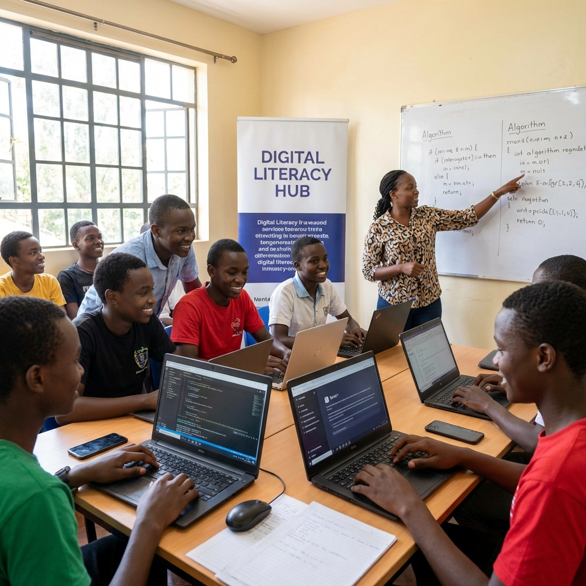

While Silicon Valley dominates headlines about artificial intelligence, something significant is happening in Paris today. UNESCO's AI Day 2026 conference has brought together African ministers, Asian policymakers, entrepreneurs, and youth to address a question the Western tech world often ignores: how can AI drive sustainable development in the Global South?
The "Priority Africa" theme signals a deliberate shift. For too long, AI development has been driven by the priorities of wealthy nations—automation for efficiency, content generation for entertainment, surveillance for security. Today's conference asks a different question: what can AI do for sustainable development, education, healthcare, and economic opportunity in regions that need it most?
Youth and Digital Transformation
The conference subtitle—"Youth and Digital Transformation – Global Priority Africa and South-South Cooperation"—reveals the strategic focus. Africa has the world's youngest population, with a median age of 19. These young people aren't just potential consumers of AI technologies developed elsewhere; they're potential creators, innovators, and entrepreneurs who could shape AI for their own contexts.
CODEMAO, a China-based coding education company, is partnering with UNESCO to deliver youth training in coding and AI during the conference. The partnership reflects a growing recognition: the next generation of AI talent won't come exclusively from Stanford and MIT. It will come from Lagos, Nairobi, Cairo, and Jakarta.
The Agenda: Practical and Political

The day's agenda mixes high-level policy discussions with practical skill-building. African ministers will participate in panels alongside UNESCO leadership. Roundtables will address strengthening human capabilities for AI in Africa and Asia. Sessions on women's entrepreneurship in AI will tackle the gender dimensions of technological transformation.
But there's also political subtext here. South-South cooperation—the idea that developing nations can collaborate and learn from each other without depending on wealthy Western nations—has been a theme in international development for decades. Applied to AI, it suggests that African and Asian nations might build their own AI ecosystems, develop their own regulatory frameworks, and chart their own technological paths.
The Technology Exhibition
A technology exhibition showcases innovations from companies like DOBOT and Unitree Robotics—Chinese firms that represent an alternative to American AI dominance. These aren't consumer apps or chatbots; they're industrial robots, educational tools, and infrastructure technologies designed for practical applications in developing economies.
The choice of exhibitors is telling. While Western AI discourse focuses on large language models and generative AI, the technologies on display here emphasize robotics, automation, and physical-world applications—areas where AI can address immediate infrastructure and productivity challenges.
Beyond the Conference
Whether UNESCO's AI Day produces concrete outcomes or just more dialogue remains to be seen. International conferences have a habit of generating more heat than light, more declarations than action. But the framing matters: AI as a tool for development rather than just profit, Africa as a priority rather than an afterthought, youth as creators rather than just consumers.
The tech industry's narrative about AI tends to be universalist—one technology, one set of applications, one regulatory approach for the whole world. UNESCO's conference suggests an alternative: AI development that responds to local needs, respects cultural contexts, and prioritizes sustainable development over rapid monetization.
For the billions of people in the Global South, that reframing can't come soon enough.